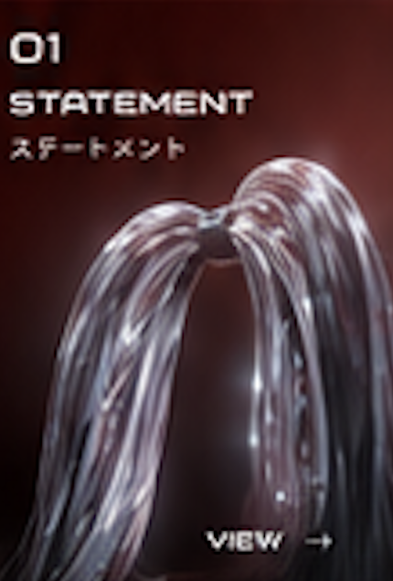
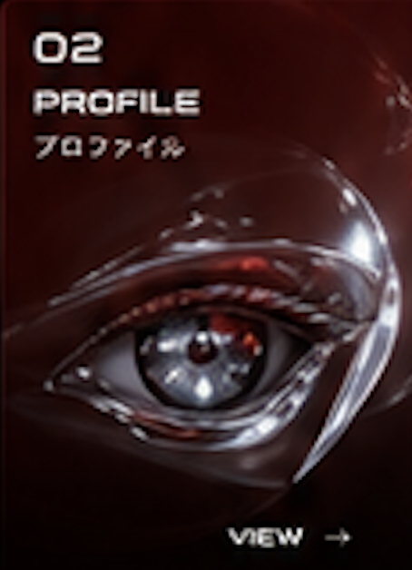
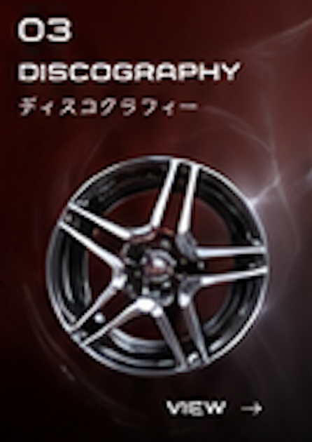
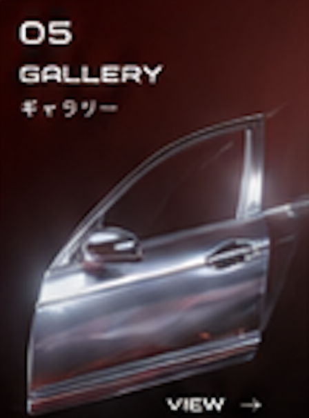
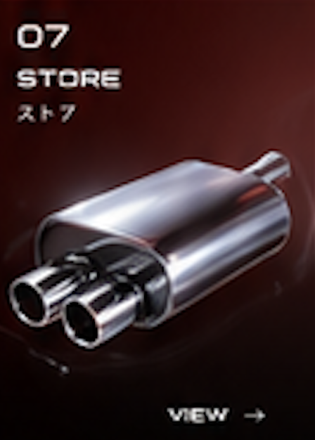

Official Site — 2026
轟Z子
Todoroki Zetsuko
ZETSUKO ≒ THE CAR — assembled by your support.
Scroll ↓

アイドルとして人前に立つこと、ノイズを鳴らすこと、Maxで音と映像を制御すること。それぞれは別々の言語のようでいて、私の中ではひとつの問いとしてつながっている。
従来のアイドル像を拡張し、新しいフィールドへ接続する——その実験を、ステージでも、画面の中でも続けている。




For inquiries and bookings, please reach out via zetsukojapan.com.